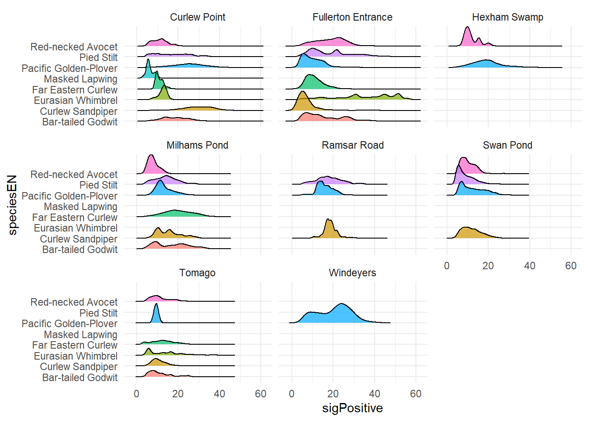

library(motus)
library(dplyr)
library(here)
library(ggridges)
library(tidyr)
library(readr)
library(dplyr)
library(ggplot2)
library(vegan)
library(philentropy)
library(gridExtra)
library(gt)
library(ggpubr)
library(car)
library(FSA)
library(purrr)
library(patchwork)
library(mixtools)
library(lubridate)
library(data.table)Site use - hours (OBP method)
Load your data in your R environment - see Load & Format > Reproducibility
Note: As Fullerton Entrance is particular (single directional antenna), we will treat this case particularly and separately (see Fullerton Entrance (Fly-by vs Site Use)).
Relative Signal Strength Indicator (RSSI)
Both the antenna location and the centre of its range are coarse-scale localisations of tag position. An extension of this method is to further account for shifts in location estimates by modelling the relationship between distance from the mast and RSSI values using the density distribution of RSSI values. If we assume 1) a circular radiation pattern with constant detection probability inside the theoretical range of the antenna (~0.5 km for omni and ~ 3km for 3-Yagi and H-antenna?) and decreasing detection probability at distances beyond the theoretical range; and 2) that birds (detections) were randomly distributed throughout the possible detectability space of the antenna, then we would predict RSSI values to be positively skewed and have a modal value corresponding to detections at the perimeter of the nominal range (being the RSSI isopleth with the greatest surface area and constant detection probability). Not capable of estimating a clear relation between distance and RSSI values, as radio wave ranges varies a lot depending landscape and weather, we simply can assume the higher the RSSI value is the closer the bird is.
![Schema 1: Assuming (i) a 5km range and circular radiation pattern with RSSI diminishing with distance; and (ii) a constant detection probability within the range and diminishing detection probability outside this range; then the density distribution of RSSI values would be positively skewed with modal RSSI values associated with transmitters that were detected on the perimeter of the radiation pattern (being the RSSI isopleth ~70 with the largest surface area and constant detection probability) (iii). [(Orange-bellied Parrot Migration Tracking, VHF DATA PROCESSING PROTOCOLS 2024, Department of Natural Resources and Environment Tasmania)](https://nre.tas.gov.au/Documents/Orange-bellied%20Parrot%20Telemetry%20-%20Migration%20Tracking%20-%202024%20-%20VHF%20Data%20Processing%20Protocols.pdf)](../../material/rssi_obp_schema.png)
Schema 1: Assuming (i) a 5km range and circular radiation pattern with RSSI diminishing with distance; and (ii) a constant detection probability within the range and diminishing detection probability outside this range; then the density distribution of RSSI values would be positively skewed with modal RSSI values associated with transmitters that were detected on the perimeter of the radiation pattern (being the RSSI isopleth ~70 with the largest surface area and constant detection probability) (iii). (Orange-bellied Parrot Migration Tracking, VHF DATA PROCESSING PROTOCOLS 2024, Department of Natural Resources and Environment Tasmania)
The distribution of RSSI for our data is shown below (e.g., RSSI ~70/100/>140 indicates the bird is likely in the far/medium/close range of the antenna’s detection capability).

Site use adjusted for detection gap threshold
Detection threshold
To define independent observations, we needed a time gap that separates a bird leaving a site from just briefly dropping out of antenna range (e.g., by turning away or moving behind vegetation). Short gaps likely mean the bird is still present; long gaps likely mean it has left. We analysed the distribution of time gaps between successive detection runs of the same bird at the same station, and across all individuals, and used this to choose a cut-off separating “same visit” from “new visit”. A three-component mixture model (MIXTOOLS 2.0.0.1) was fitted to the gap durations, distinguishing short gaps (same visit) from medium/long gaps (new visit). Gaps were truncated to 5 min – 30 hours to remove noise from very short or very long outliers, and each gap was classified by whichever distribution best matched it.
1. Build run-level summary (one row per run) from hits. A “run” is already identified by runID in data_all (see Motus documentation - Chapter 3). We need the start/end time of each run, per individual and per station.
runs <- data_all %>%
group_by(speciesEN, Band.ID, recvDeployName, runID) %>%
summarise(
runStart = min(timeAus, na.rm = TRUE),
runEnd = max(timeAus, na.rm = TRUE),
n_detect = n(),
.groups = "drop")2. Compute gaps between successive runs of the same individual at the same antenna/site.
gaps <- runs %>%
arrange(Band.ID, recvDeployName, runStart) %>%
group_by(Band.ID, recvDeployName) %>%
mutate(
prevRunEnd = lag(runEnd),
gapHours = round(as.numeric(difftime(runStart, prevRunEnd, units = "hours")), 2)) %>%
ungroup() %>%
filter(!is.na(gapHours)) %>%
filter(gapHours > 0) # we are not dealing with overlaps yet (simultaneous detection of the same tag from two or more antenna)3. Truncate gaps (hours) for mixture model fitting. ::: blockquote-yellow NOTE: Below are values you should choose based on your own data and on the ecological plausibility of your system. :::


4. Fit a 3-component normal mixture model. Now we have visually explored how data is distributed to select a gap threshold value, we might use statistical model to assess this value more systematical and based on the data only, besides visual selection accounting for ecologically plausibility.
gap_trunc <- gaps %>%
filter(gapHours > 0.3, # ~5 minutes
gapHours < 30) %>% # 30 hours
pull(gapHours)
set.seed(123) # for reproducibility of EM starting values
mix_model <- normalmixEM(
gap_trunc,
k = 3,
maxit = 5000,
epsilon = 1e-08)number of iterations= 150 summary(mix_model)summary of normalmixEM object:
comp 1 comp 2 comp 3
lambda 0.324799 0.587364 0.0878374
mu 0.696852 9.275983 23.9154082
sigma 0.352310 6.131985 0.4628914
loglik at estimate: -12830.01 6. Find the threshold value, the cut-point: the gap value where classification switches from “Non-independent” to an “Independent” class (i.e. where posterior prob of the non-independent component drops below 0.5 as gap duration increases). We will first classify each gap to the component with highest posterior probability, and order components by their mean, so component 1 = shortest-gap (non-independent), 2 = medium, 3 = long (independent).

Define used time (hours)
Now, we decide to merge into one and unique continuous detection, all the tags (birds) detected per a same antenna, including gaps under a duration of 1 (one) hour. Although the model is highlighting a value of 1.57, we decided to remain conservative.
Once detection data summarised as described above, we can see, overall, how long birds stay around one Motus station - see plot below.

*Note Newcastle NSW tides are turning ~6h cycles between high/low, and our birds seem to mostly visits any site less than 3 hours. An early descriptive sign of site use very tide dependent, as they would stay about 3 hours in the same area, around the highest/lowest point of the tide line, before to leave site, as the tide might be rising or receiving.*

To avoid inflating site use duration estimates with the very few individuals showing more than 25 hours of continuous presence in the same area, we excluded these cases. Such extended duration likely reflect a dropped tag rather than genuine site fidelity. Verifying each case individually would be time-consuming, so we treat this as a working assumption for now; should this pattern become more frequent in future data, it would warrant closer investigation.
visit_duration <- visit_duration %>%
filter(duration_h < 25)It remains to attribute at each visit period a tide category. We expand each visit into hourly bins spanning visitStart to visitEnd (visit_duration itself is untouched). Then, we compute exact overlap (in hours) between each hourly bin and the actual visit window.
visit_hours <- visit_duration %>%
rowwise() %>%
mutate(hour_dt = list(seq(from = floor_date(visitStart, "hour"),
to = floor_date(visitEnd, "hour"),
by = "hour"))) %>%
unnest(cols = c(hour_dt)) %>%
ungroup()
visit_hours <- visit_hours %>%
mutate(
bin_start = hour_dt,
bin_end = hour_dt + hours(1),
overlap_start = pmax(visitStart, bin_start),
overlap_end = pmin(visitEnd, bin_end),
overlap_h = as.numeric(difftime(overlap_end, overlap_start, units = "hours"))
) %>%
filter(overlap_h > 0) # drops bins with no actual overlap
# Attach nearest tide category to each hourly bin
tide_dt <- as.data.table(tide_data)[, .(tideDateTimeAus, tideCategory)]
setkey(tide_dt, tideDateTimeAus)
vh_dt <- as.data.table(visit_hours)
setkey(vh_dt, hour_dt)
visit_hours_tide <- tide_dt[vh_dt, on = .(tideDateTimeAus = hour_dt), roll = "nearest"]
setnames(visit_hours_tide, "tideDateTimeAus", "hour_dt")Let’s finalise the table giving data for detection relative to the trio bird-station-tide.
used_bird_recv_time <- visit_hours_tide %>%
mutate(tideDiel = if_else(grepl("Diurnal", tideCategory), "Diurnal", "Nocturnal"),
tideHighLow = if_else(grepl("High", tideCategory), "High", "Low")) %>%
group_by(Band.ID, speciesEN, recvDeployName, tideCategory, tideDiel, tideHighLow) %>%
summarise(duration_h = sum(overlap_h), .groups = "drop")Define available time (hours)
Now used time addressed, we need to define for each individual (birds) and across each Motus stations, what was the amount of time available for the four tide categories.
Available time for each Motus stations is accessed with activity table: each row is a dated record of noise or a tag detected - see Survey effort > Activity table.
We need to extract the temporal coverage of each station, starting from deployment date to the last recorded activity (noise or detection).
# Sort the terminated serno (if terminated, ie. one box removed from one antenna site, a date comes along)
# but still needed for accessing survey effort as the station is currently running with another serno
recv.act.term <- recv.act %>%
left_join(recv %>%
filter(!is.na(timeEndAus)) %>%
select(deviceID, serno, recvDeployName),
"deviceID") %>%
filter(!is.na(recvDeployName)) %>%
mutate(SernoStation = paste0(recvDeployName, "_", serno))
# Sort the currently running serno
recv.act.runn <- recv.act %>%
left_join(recv %>%
filter(is.na(timeEndAus)) %>%
select(deviceID, serno, recvDeployName),
"deviceID") %>%
filter(!is.na(recvDeployName)) %>%
mutate(SernoStation = paste0(recvDeployName, "_", serno))
# Merging in one data-set to use Station's name further + pick-up the rounded hours
recv.act <- bind_rows(recv.act.runn, recv.act.term) %>%
mutate(hour_dt = round_date(dateAus, "hour"))
# Providing helpful variables
recv <- recv %>%
mutate(SernoStation = paste0(recvDeployName, "_", serno),
lisStart = timeStartAus,
lisEnd = if_else(
is.na(timeEndAus), # means the station is still running since the last data downloading
with_tz(Sys.time(), "Australia/Sydney"),
with_tz(as_datetime(timeEndAus, tz = "UTC"), "Australia/Sydney")) )
# Generating hourly sequences per SernoStation from start to end dates of the deviceID at particular sites
recv_hours <- recv %>%
select(recvDeployName, deviceID, SernoStation, lisStart, lisEnd) %>%
group_by(SernoStation) %>%
rowwise() %>%
mutate(hour_dt = list(seq(from = round_date(lisStart, unit = "hour"),
to = round_date(lisEnd, unit = "hour"),
by = "hour")) ) %>%
unnest(cols = c(hour_dt)) %>%
ungroup()
# Simplify station variables (recvDeployName)
recv <- recv %>%
select(!recvDeployName)
recv$recvDeployName <- sub("_SG-.*", "", recv$SernoStation)
recv_hours <- recv_hours %>%
select(!recvDeployName)
recv_hours$recvDeployName <- sub("_SG-.*", "", recv_hours$SernoStation)We now how the complete temporal coverage, expanded in hours and for each Motus station so it matches with our used time dataset.
However, due to some temporary failures or maintenance (see Survey effort > Operational periods), the actual period a station was operational may be different than the complete temporal coverage. So, we must determine when a station was not operational and substrate these off-hours to the complete temporal coverage.
# Distinguish station from mixed recv + Giving operational variable (= TRUE when existing values from act table)
recv_hours <- recv_hours %>%
select(-any_of("operational")) %>% # drop if it already exists, no-op if it doesn't
left_join(recv.act %>%
distinct(recvDeployName, hour_dt) %>%
mutate(operational = TRUE),
by = c("recvDeployName", "hour_dt")) %>%
mutate(operational = if_else(is.na(operational), FALSE, TRUE))
# /!\ Due to unknown error? Have to set this manually
recv_hours <- recv_hours %>%
mutate(operational = case_when(
recvDeployName == "Fullerton Entrance" &
hour_dt > as.POSIXct("2023-04-02") &
hour_dt < as.POSIXct("2023-04-05") ~ FALSE,
TRUE ~ operational))
# Only the hours the station was actually ON — computed once, no regeneration of gaps
valid_station_hours <- recv_hours %>%
filter(operational == TRUE) %>%
distinct(recvDeployName, hour_dt)
# Attach nearest tide category directly (this also folds in the Point 7 fix —
tide_dt <- as.data.table(tide_data)[, .(tideDateTimeAus, tideCategory)]
setkey(tide_dt, tideDateTimeAus)
vsh_dt <- as.data.table(valid_station_hours)
setkey(vsh_dt, hour_dt)
valid_station_hours_tide <- tide_dt[vsh_dt, on = .(tideDateTimeAus = hour_dt), roll = "nearest"]
setnames(valid_station_hours_tide, "tideDateTimeAus", "hour_dt")Temporal coverage for each station is now reduced to its operational periods. We now assign each bird its own available time period, spanning from its tagging date to its last Motus detection, and expanded to hourly resolution too.
# Get the monitored period of each bird
period_sp <- data_all %>%
group_by(Band.ID) %>%
reframe(DateAUS.Trap = first(DateAUS.Trap),
last_dateAus = max(timeAus),
speciesEN = first(speciesEN)) %>%
unique()
# Expand one row per hours to each individual across its whole period (this is the available time)
bird_hours <- period_sp %>%
group_by(Band.ID) %>%
rowwise() %>%
mutate(hour_dt = list(seq(from = as.POSIXct(ymd(DateAUS.Trap), tz = "UTC"),
to = as.POSIXct(last_dateAus, tz = "UTC"),
by = "hour"))) %>%
unnest(cols = c(hour_dt)) %>%
ungroup()
# Duplicate in as many list as many stations
recv_names <- unique(valid_station_hours_tide$recvDeployName)
bird_data_list <- setNames(vector("list", length(recv_names)), recv_names)
for(name in recv_names) {
valid_hours_recv <- valid_station_hours_tide %>%
filter(recvDeployName == name) %>%
pull(hour_dt)
valid_hours_bird_recv <- bird_hours %>%
filter(hour_dt %in% valid_hours_recv)
valid_hours_bird_recv$name <- name
bird_data_list[[name]] <- valid_hours_bird_recv
}
# # FINALISE AVAILABLE TIME
available_bird_recv_time <- bind_rows(bird_data_list) %>%
mutate(hour_dt = force_tz(hour_dt, "Australia/Sydney")) %>%
filter(if_all(everything(), ~ !is.na(.))) %>%
rename(recvDeployName = name) %>%
left_join(valid_station_hours_tide, by = c("recvDeployName", "hour_dt")) %>%
filter(!is.na(tideCategory)) %>% # bird-hours the station wasn't actually ON for get dropped here
group_by(Band.ID, speciesEN, recvDeployName, tideCategory) %>%
summarise(duration_h = n(), .groups = "drop") %>%
mutate(tideDiel = if_else(grepl("Diurnal", tideCategory), "Diurnal", "Nocturnal"),
tideHighLow = if_else(grepl("High", tideCategory), "High", "Low")) %>%
select(Band.ID, speciesEN, recvDeployName, tideCategory, tideDiel, tideHighLow, duration_h)The available time is now defined for each bird across each Motus station, taking into account the periods where stations where ON only. In the data, the available periods are expanded in hours and the tide condition is associated. While most of the couple station listening-bird tagged are potentially detectable between 0 and 1000 hours; note two small peaks around 2700 and 4000 hours of detectability potential as it might be relative to the oldest couple ON.


Define rate of Use (%)
Now that the used and available time have been determined for each individual and for each Motus station, we can relate these two elements together with the Usage rate (or rate of use).
\[ \text{Usage rate} = \frac{\text{Time used}}{\text{Time available}} \times 100 \quad \textit{across stations and species} \]
use_rate_plot <- used_bird_recv_time %>%
select(-tideDiel, -tideHighLow) %>% # drop here, keep the copy from available_bird_recv_time
rename(used_h = duration_h) %>%
left_join(available_bird_recv_time %>%
rename(available_h = duration_h),
by = c("Band.ID", "speciesEN", "recvDeployName", "tideCategory")) %>%
mutate(rate_use = (used_h / available_h) * 100) %>%
select(Band.ID, speciesEN, recvDeployName, tideCategory,
tideDiel, tideHighLow, used_h, available_h, rate_use)Note: A very few cases (n = 2) where the time used was over the time available has been excluded from the data. Reasons might be the tag fell off within range of the antenna. Due to the negligible number of such cases, we have not further investigated.
use_rate_plot <- use_rate_plot %>%
filter(rate_use < 100)Note: We filtered out Masked Lapwing from the analysis, since they have too few data.
figure_plot <- use_rate_plot %>%
mutate(speciesType = factor(shorebird_class[speciesEN],
levels = c("migratory", "resident"))) %>%
filter(!speciesEN %in% c("Masked Lapwing")) Results
The plot below shows you how much each species have been detected over the array, by night and by day. First displayed overall. Second displayed per condition and showing individual variation.


Resident species

High Tide Resident birds
| Statistics - High Tide Resident Species | ||||||||||
|---|---|---|---|---|---|---|---|---|---|---|
| Species | Station | condition | n_individual | min | q1 | median | q3 | max | mean | sd |
| Pied Stilt | Curlew Point | Diurnal | 2 | 4.1 | 5.8 | 7.6 | 9.3 | 11.0 | 7.6 | 4.9 |
| Pied Stilt | Curlew Point | Nocturnal | 1 | 1.9 | 1.9 | 1.9 | 1.9 | 1.9 | 1.9 | NA |
| Pied Stilt | Fullerton Entrance | Diurnal | 4 | 2.8 | 6.3 | 26.3 | 48.4 | 58.1 | 28.4 | 27.4 |
| Pied Stilt | Fullerton Entrance | Nocturnal | 4 | 1.0 | 2.7 | 3.3 | 9.9 | 29.3 | 9.2 | 13.4 |
| Pied Stilt | Milhams Pond | Diurnal | 1 | 2.2 | 2.2 | 2.2 | 2.2 | 2.2 | 2.2 | NA |
| Pied Stilt | Milhams Pond | Nocturnal | 1 | 0.4 | 0.4 | 0.4 | 0.4 | 0.4 | 0.4 | NA |
| Pied Stilt | Ramsar Road | Diurnal | 2 | 2.9 | 2.9 | 3.0 | 3.0 | 3.0 | 3.0 | 0.1 |
| Pied Stilt | Ramsar Road | Nocturnal | 2 | 1.2 | 1.5 | 1.8 | 2.1 | 2.5 | 1.8 | 0.9 |
| Pied Stilt | Swan Pond | Diurnal | 2 | 1.2 | 4.2 | 7.2 | 10.2 | 13.2 | 7.2 | 8.4 |
| Pied Stilt | Swan Pond | Nocturnal | 2 | 0.8 | 3.5 | 6.3 | 9.1 | 11.8 | 6.3 | 7.8 |
| Red-necked Avocet | Curlew Point | Diurnal | 2 | 8.2 | 9.0 | 9.9 | 10.8 | 11.7 | 9.9 | 2.5 |
| Red-necked Avocet | Curlew Point | Nocturnal | 1 | 1.4 | 1.4 | 1.4 | 1.4 | 1.4 | 1.4 | NA |
| Red-necked Avocet | Fullerton Entrance | Diurnal | 3 | 10.5 | 14.3 | 18.0 | 30.7 | 43.3 | 24.0 | 17.2 |
| Red-necked Avocet | Fullerton Entrance | Nocturnal | 3 | 18.8 | 19.5 | 20.3 | 28.3 | 36.4 | 25.2 | 9.8 |
| Red-necked Avocet | Hexham Swamp | Nocturnal | 1 | 0.0 | 0.0 | 0.0 | 0.0 | 0.0 | 0.0 | NA |
| Red-necked Avocet | Swan Pond | Diurnal | 1 | 0.7 | 0.7 | 0.7 | 0.7 | 0.7 | 0.7 | NA |
| Red-necked Avocet | Swan Pond | Nocturnal | 1 | 0.3 | 0.3 | 0.3 | 0.3 | 0.3 | 0.3 | NA |
| Red-necked Avocet | Tomago | Diurnal | 3 | 0.0 | 0.5 | 1.0 | 1.5 | 2.0 | 1.0 | 1.0 |
| Red-necked Avocet | Tomago | Nocturnal | 3 | 13.7 | 14.7 | 15.6 | 19.0 | 22.3 | 17.2 | 4.5 |

Low Tide Resident birds
| Statistics - Low Tide Resident Species | ||||||||||
|---|---|---|---|---|---|---|---|---|---|---|
| Species | Station | condition | n_individual | min | q1 | median | q3 | max | mean | sd |
| Pied Stilt | Curlew Point | Diurnal | 2 | 0.0 | 0.3 | 0.5 | 0.8 | 1.1 | 0.5 | 0.7 |
| Pied Stilt | Curlew Point | Nocturnal | 2 | 0.3 | 0.5 | 0.8 | 1.0 | 1.2 | 0.8 | 0.6 |
| Pied Stilt | Fullerton Entrance | Diurnal | 5 | 2.8 | 8.9 | 12.4 | 27.1 | 32.7 | 16.8 | 12.6 |
| Pied Stilt | Fullerton Entrance | Nocturnal | 5 | 1.1 | 5.0 | 7.2 | 17.7 | 56.3 | 17.5 | 22.5 |
| Pied Stilt | Milhams Pond | Diurnal | 1 | 2.7 | 2.7 | 2.7 | 2.7 | 2.7 | 2.7 | NA |
| Pied Stilt | Milhams Pond | Nocturnal | 1 | 2.2 | 2.2 | 2.2 | 2.2 | 2.2 | 2.2 | NA |
| Pied Stilt | Ramsar Road | Diurnal | 2 | 2.4 | 2.8 | 3.1 | 3.5 | 3.8 | 3.1 | 1.0 |
| Pied Stilt | Ramsar Road | Nocturnal | 2 | 0.0 | 1.0 | 2.1 | 3.1 | 4.1 | 2.1 | 2.9 |
| Pied Stilt | Swan Pond | Diurnal | 2 | 1.6 | 7.7 | 13.8 | 19.9 | 26.1 | 13.8 | 17.3 |
| Pied Stilt | Swan Pond | Nocturnal | 2 | 0.5 | 1.6 | 2.6 | 3.6 | 4.6 | 2.6 | 2.9 |
| Red-necked Avocet | Curlew Point | Diurnal | 2 | 1.2 | 2.1 | 3.0 | 3.8 | 4.7 | 3.0 | 2.5 |
| Red-necked Avocet | Curlew Point | Nocturnal | 2 | 0.5 | 0.5 | 0.6 | 0.7 | 0.7 | 0.6 | 0.2 |
| Red-necked Avocet | Fullerton Entrance | Diurnal | 3 | 7.9 | 8.9 | 10.0 | 11.0 | 11.9 | 9.9 | 2.0 |
| Red-necked Avocet | Fullerton Entrance | Nocturnal | 3 | 3.1 | 4.5 | 5.8 | 5.9 | 6.0 | 5.0 | 1.6 |
| Red-necked Avocet | Swan Pond | Nocturnal | 1 | 4.5 | 4.5 | 4.5 | 4.5 | 4.5 | 4.5 | NA |
| Red-necked Avocet | Tomago | Diurnal | 2 | 0.0 | 0.0 | 0.1 | 0.1 | 0.1 | 0.1 | 0.1 |
| Red-necked Avocet | Tomago | Nocturnal | 3 | 0.1 | 0.4 | 0.8 | 2.6 | 4.5 | 1.8 | 2.4 |
Migrant species

High Tide Migratory birds
| Statistics - High Tide Migratory Species | ||||||||||
|---|---|---|---|---|---|---|---|---|---|---|
| Species | Station | condition | n_individual | min | q1 | median | q3 | max | mean | sd |
| Bar-tailed Godwit | Curlew Point | Diurnal | 5 | 1.6 | 45.2 | 52.3 | 63.6 | 67.9 | 46.1 | 26.5 |
| Bar-tailed Godwit | Curlew Point | Nocturnal | 5 | 0.7 | 7.9 | 9.5 | 15.8 | 35.7 | 13.9 | 13.3 |
| Bar-tailed Godwit | Fullerton Entrance | Diurnal | 3 | 0.1 | 2.0 | 3.9 | 44.8 | 85.7 | 29.9 | 48.4 |
| Bar-tailed Godwit | Fullerton Entrance | Nocturnal | 6 | 0.0 | 0.1 | 0.1 | 0.4 | 53.4 | 9.0 | 21.7 |
| Bar-tailed Godwit | Tomago | Diurnal | 2 | 2.9 | 3.5 | 4.0 | 4.6 | 5.1 | 4.0 | 1.5 |
| Bar-tailed Godwit | Tomago | Nocturnal | 5 | 0.1 | 1.3 | 56.4 | 57.3 | 64.5 | 35.9 | 32.3 |
| Curlew Sandpiper | Curlew Point | Diurnal | 5 | 15.1 | 33.2 | 48.9 | 53.4 | 54.4 | 41.0 | 16.8 |
| Curlew Sandpiper | Curlew Point | Nocturnal | 5 | 2.2 | 12.7 | 13.0 | 14.9 | 21.9 | 12.9 | 7.1 |
| Curlew Sandpiper | Fullerton Entrance | Diurnal | 4 | 0.0 | 0.0 | 0.1 | 0.7 | 2.5 | 0.7 | 1.2 |
| Curlew Sandpiper | Fullerton Entrance | Nocturnal | 4 | 0.1 | 0.1 | 0.1 | 0.3 | 1.0 | 0.3 | 0.5 |
| Curlew Sandpiper | Ramsar Road | Diurnal | 5 | 0.0 | 0.0 | 0.0 | 0.0 | 0.0 | 0.0 | 0.0 |
| Curlew Sandpiper | Ramsar Road | Nocturnal | 4 | 0.0 | 0.0 | 0.0 | 0.0 | 0.1 | 0.0 | 0.0 |
| Curlew Sandpiper | Swan Pond | Diurnal | 5 | 0.0 | 0.1 | 0.1 | 0.1 | 0.1 | 0.1 | 0.0 |
| Curlew Sandpiper | Swan Pond | Nocturnal | 5 | 0.1 | 0.2 | 0.3 | 0.3 | 0.3 | 0.2 | 0.1 |
| Curlew Sandpiper | Tomago | Diurnal | 5 | 0.0 | 0.1 | 0.1 | 0.1 | 0.3 | 0.1 | 0.1 |
| Curlew Sandpiper | Tomago | Nocturnal | 5 | 0.1 | 0.1 | 0.1 | 0.2 | 0.3 | 0.1 | 0.1 |
| Eurasian Whimbrel | Curlew Point | Diurnal | 1 | 2.6 | 2.6 | 2.6 | 2.6 | 2.6 | 2.6 | NA |
| Eurasian Whimbrel | Curlew Point | Nocturnal | 1 | 3.9 | 3.9 | 3.9 | 3.9 | 3.9 | 3.9 | NA |
| Eurasian Whimbrel | Fullerton Entrance | Diurnal | 2 | 2.1 | 2.2 | 2.3 | 2.3 | 2.4 | 2.3 | 0.2 |
| Eurasian Whimbrel | Fullerton Entrance | Nocturnal | 2 | 0.0 | 0.0 | 0.1 | 0.1 | 0.1 | 0.1 | 0.1 |
| Eurasian Whimbrel | Tomago | Nocturnal | 1 | 0.9 | 0.9 | 0.9 | 0.9 | 0.9 | 0.9 | NA |
| Far Eastern Curlew | Curlew Point | Diurnal | 1 | 3.8 | 3.8 | 3.8 | 3.8 | 3.8 | 3.8 | NA |
| Far Eastern Curlew | Fullerton Entrance | Diurnal | 1 | 0.0 | 0.0 | 0.0 | 0.0 | 0.0 | 0.0 | NA |
| Far Eastern Curlew | Fullerton Entrance | Nocturnal | 1 | 1.3 | 1.3 | 1.3 | 1.3 | 1.3 | 1.3 | NA |
| Far Eastern Curlew | Milhams Pond | Diurnal | 1 | 40.6 | 40.6 | 40.6 | 40.6 | 40.6 | 40.6 | NA |
| Far Eastern Curlew | Milhams Pond | Nocturnal | 1 | 11.0 | 11.0 | 11.0 | 11.0 | 11.0 | 11.0 | NA |
| Far Eastern Curlew | Tomago | Nocturnal | 1 | 2.6 | 2.6 | 2.6 | 2.6 | 2.6 | 2.6 | NA |
| Pacific Golden-Plover | Curlew Point | Diurnal | 13 | 2.5 | 5.1 | 20.5 | 38.4 | 71.1 | 23.6 | 22.1 |
| Pacific Golden-Plover | Curlew Point | Nocturnal | 12 | 0.0 | 1.5 | 3.5 | 10.1 | 16.8 | 5.9 | 5.7 |
| Pacific Golden-Plover | Fullerton Entrance | Diurnal | 6 | 0.0 | 0.1 | 0.1 | 0.3 | 3.4 | 0.7 | 1.3 |
| Pacific Golden-Plover | Fullerton Entrance | Nocturnal | 5 | 0.1 | 0.2 | 0.4 | 0.7 | 5.4 | 1.4 | 2.3 |
| Pacific Golden-Plover | Hexham Swamp | Diurnal | 6 | 0.0 | 1.3 | 2.8 | 5.5 | 9.4 | 3.7 | 3.5 |
| Pacific Golden-Plover | Hexham Swamp | Nocturnal | 8 | 0.0 | 0.4 | 0.8 | 1.5 | 2.6 | 1.0 | 0.9 |
| Pacific Golden-Plover | Milhams Pond | Diurnal | 2 | 0.6 | 10.2 | 19.7 | 29.3 | 38.8 | 19.7 | 27.0 |
| Pacific Golden-Plover | Milhams Pond | Nocturnal | 2 | 0.0 | 4.9 | 9.8 | 14.6 | 19.5 | 9.8 | 13.8 |
| Pacific Golden-Plover | Ramsar Road | Diurnal | 2 | 0.0 | 0.2 | 0.4 | 0.6 | 0.8 | 0.4 | 0.6 |
| Pacific Golden-Plover | Ramsar Road | Nocturnal | 1 | 4.1 | 4.1 | 4.1 | 4.1 | 4.1 | 4.1 | NA |
| Pacific Golden-Plover | Swan Pond | Diurnal | 3 | 0.2 | 0.2 | 0.2 | 1.4 | 2.5 | 1.0 | 1.4 |
| Pacific Golden-Plover | Swan Pond | Nocturnal | 4 | 0.0 | 0.0 | 0.2 | 1.1 | 3.2 | 0.9 | 1.5 |
| Pacific Golden-Plover | Windeyers | Diurnal | 1 | 0.0 | 0.0 | 0.0 | 0.0 | 0.0 | 0.0 | NA |

Low Tide Migratory birds
| Statistics - Low Tide Migratory Species | ||||||||||
|---|---|---|---|---|---|---|---|---|---|---|
| Species | Station | condition | n_individual | min | q1 | median | q3 | max | mean | sd |
| Bar-tailed Godwit | Curlew Point | Diurnal | 6 | 0.3 | 2.1 | 7.6 | 14.1 | 60.6 | 15.4 | 22.8 |
| Bar-tailed Godwit | Curlew Point | Nocturnal | 6 | 1.0 | 3.6 | 7.6 | 12.2 | 97.5 | 21.6 | 37.5 |
| Bar-tailed Godwit | Fullerton Entrance | Diurnal | 5 | 0.0 | 0.0 | 0.1 | 0.4 | 54.9 | 11.1 | 24.5 |
| Bar-tailed Godwit | Fullerton Entrance | Nocturnal | 4 | 0.0 | 0.0 | 0.8 | 13.6 | 50.0 | 12.9 | 24.8 |
| Bar-tailed Godwit | Milhams Pond | Diurnal | 1 | 1.2 | 1.2 | 1.2 | 1.2 | 1.2 | 1.2 | NA |
| Bar-tailed Godwit | Tomago | Diurnal | 1 | 0.2 | 0.2 | 0.2 | 0.2 | 0.2 | 0.2 | NA |
| Bar-tailed Godwit | Tomago | Nocturnal | 3 | 0.1 | 1.5 | 3.0 | 4.8 | 6.7 | 3.3 | 3.3 |
| Curlew Sandpiper | Curlew Point | Diurnal | 5 | 13.0 | 34.7 | 39.8 | 41.2 | 47.4 | 35.2 | 13.2 |
| Curlew Sandpiper | Curlew Point | Nocturnal | 5 | 5.5 | 13.4 | 17.5 | 18.0 | 20.7 | 15.0 | 5.9 |
| Curlew Sandpiper | Fullerton Entrance | Diurnal | 4 | 0.0 | 0.0 | 0.0 | 0.5 | 1.8 | 0.5 | 0.9 |
| Curlew Sandpiper | Fullerton Entrance | Nocturnal | 4 | 0.2 | 0.3 | 0.3 | 1.0 | 2.9 | 0.9 | 1.3 |
| Curlew Sandpiper | Ramsar Road | Diurnal | 3 | 0.0 | 0.0 | 0.0 | 0.0 | 0.0 | 0.0 | 0.0 |
| Curlew Sandpiper | Ramsar Road | Nocturnal | 4 | 0.0 | 0.0 | 0.1 | 0.1 | 0.1 | 0.1 | 0.0 |
| Curlew Sandpiper | Swan Pond | Diurnal | 5 | 0.0 | 0.0 | 0.1 | 0.1 | 0.1 | 0.1 | 0.0 |
| Curlew Sandpiper | Swan Pond | Nocturnal | 5 | 0.2 | 0.3 | 0.3 | 0.4 | 0.4 | 0.3 | 0.1 |
| Curlew Sandpiper | Tomago | Diurnal | 4 | 0.0 | 0.1 | 0.1 | 0.1 | 0.3 | 0.1 | 0.1 |
| Curlew Sandpiper | Tomago | Nocturnal | 5 | 0.1 | 0.2 | 0.2 | 0.2 | 1.7 | 0.5 | 0.7 |
| Eurasian Whimbrel | Curlew Point | Diurnal | 1 | 4.8 | 4.8 | 4.8 | 4.8 | 4.8 | 4.8 | NA |
| Eurasian Whimbrel | Curlew Point | Nocturnal | 1 | 10.0 | 10.0 | 10.0 | 10.0 | 10.0 | 10.0 | NA |
| Eurasian Whimbrel | Fullerton Entrance | Diurnal | 2 | 0.0 | 0.1 | 0.1 | 0.2 | 0.3 | 0.1 | 0.2 |
| Eurasian Whimbrel | Fullerton Entrance | Nocturnal | 2 | 0.0 | 0.2 | 0.4 | 0.6 | 0.8 | 0.4 | 0.6 |
| Eurasian Whimbrel | Tomago | Diurnal | 1 | 0.6 | 0.6 | 0.6 | 0.6 | 0.6 | 0.6 | NA |
| Eurasian Whimbrel | Tomago | Nocturnal | 1 | 1.1 | 1.1 | 1.1 | 1.1 | 1.1 | 1.1 | NA |
| Far Eastern Curlew | Fullerton Entrance | Diurnal | 1 | 2.0 | 2.0 | 2.0 | 2.0 | 2.0 | 2.0 | NA |
| Far Eastern Curlew | Fullerton Entrance | Nocturnal | 1 | 6.0 | 6.0 | 6.0 | 6.0 | 6.0 | 6.0 | NA |
| Far Eastern Curlew | Milhams Pond | Diurnal | 1 | 34.8 | 34.8 | 34.8 | 34.8 | 34.8 | 34.8 | NA |
| Far Eastern Curlew | Milhams Pond | Nocturnal | 1 | 73.5 | 73.5 | 73.5 | 73.5 | 73.5 | 73.5 | NA |
| Far Eastern Curlew | Tomago | Diurnal | 1 | 0.4 | 0.4 | 0.4 | 0.4 | 0.4 | 0.4 | NA |
| Far Eastern Curlew | Tomago | Nocturnal | 1 | 0.5 | 0.5 | 0.5 | 0.5 | 0.5 | 0.5 | NA |
| Pacific Golden-Plover | Curlew Point | Diurnal | 13 | 4.2 | 9.7 | 20.1 | 36.3 | 67.9 | 24.7 | 20.6 |
| Pacific Golden-Plover | Curlew Point | Nocturnal | 12 | 0.0 | 1.9 | 5.4 | 14.6 | 29.5 | 8.6 | 8.8 |
| Pacific Golden-Plover | Fullerton Entrance | Diurnal | 6 | 0.1 | 0.2 | 0.3 | 0.6 | 4.7 | 1.0 | 1.8 |
| Pacific Golden-Plover | Fullerton Entrance | Nocturnal | 5 | 0.2 | 0.3 | 1.0 | 1.2 | 4.4 | 1.4 | 1.7 |
| Pacific Golden-Plover | Hexham Swamp | Diurnal | 5 | 1.8 | 2.3 | 4.4 | 5.2 | 8.8 | 4.5 | 2.8 |
| Pacific Golden-Plover | Hexham Swamp | Nocturnal | 6 | 0.0 | 0.1 | 0.4 | 0.7 | 3.1 | 0.8 | 1.2 |
| Pacific Golden-Plover | Milhams Pond | Diurnal | 3 | 0.0 | 0.0 | 0.0 | 18.9 | 37.9 | 12.6 | 21.9 |
| Pacific Golden-Plover | Milhams Pond | Nocturnal | 2 | 0.5 | 8.1 | 15.7 | 23.3 | 30.9 | 15.7 | 21.5 |
| Pacific Golden-Plover | Ramsar Road | Diurnal | 2 | 0.1 | 0.5 | 1.0 | 1.4 | 1.9 | 1.0 | 1.3 |
| Pacific Golden-Plover | Ramsar Road | Nocturnal | 2 | 0.9 | 3.1 | 5.4 | 7.7 | 10.0 | 5.4 | 6.4 |
| Pacific Golden-Plover | Swan Pond | Diurnal | 2 | 0.1 | 0.7 | 1.2 | 1.8 | 2.4 | 1.2 | 1.6 |
| Pacific Golden-Plover | Swan Pond | Nocturnal | 4 | 0.0 | 0.1 | 0.2 | 0.9 | 2.6 | 0.8 | 1.2 |
| Pacific Golden-Plover | Tomago | Diurnal | 1 | 0.0 | 0.0 | 0.0 | 0.0 | 0.0 | 0.0 | NA |
| Pacific Golden-Plover | Windeyers | Diurnal | 2 | 0.0 | 0.0 | 0.0 | 0.0 | 0.0 | 0.0 | 0.0 |